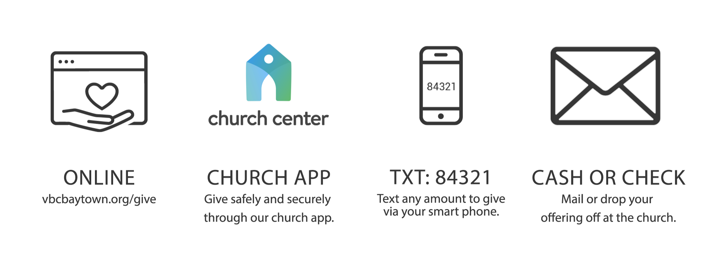

Welcome to Victory Baptist Church — a place of faith, fellowship, worship, and biblical teaching.
Victory Baptist Church exists to glorify God through worship, discipleship, evangelism, and service. We are passionate about sharing the Gospel and helping people grow in faith.
11:00 AM
6:30 PM
7:00 PM
Helping children grow in faith through worship and Bible teaching.
Encouraging teens through fellowship, discipleship, and outreach.
Building strong Christian fellowship among Adults.
Watch and listen to recent sermons from our church services.
Stay connected through weekly Bible studies and devotionals.
View upcoming events, conferences, and outreach opportunities.
Your generosity helps support ministries, missions, outreach, and the continued sharing of the Gospel.

Click Me To Give Online